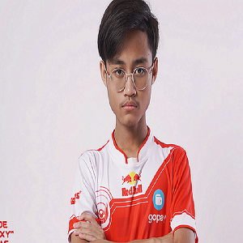

BTR Zuxxy adalah salah satu roster dari Bigetron Red Aliens yang memiliki role sebagai seorang Scout sekaligus Game Leader. Dirinya merupakan seorang kakak dari kembarannya di BTR yaitu, Luxxy. Mereka merupakan duet mematikan yang dimiliki oleh Bigetron. Zuxxy dan Luxxy kerap diberi julukan ‘Tachibana Bersaudara’, karena mengacu pada karakter kembar yang jago main bola di film Tsubasa. Karena keduanya sama-sama memiliki kecepatan tangan tingkat tinggi hingga menjadi panutan bagi para pemain PUBG Mobile. Dikarenakan kemampuan tersebut, Zuxxy memiliki julukan ‘Alien’. Standar bermain PUBG Mobile yang ia mainkan sangat tinggi dan terbukti di skala internasional dengan menjuarai sekaligus menjadi MVP di PUBG Club Open Fll Split Global Final 2019. Kemampuan yang dimiliki Zuxxy bukan didapat secara instan, butuh bertahun-tahun untuk mencapai performa puncaknya hingga saat ini. Zuxxy sudah hobi bermain game sejak kecil bergenre tembak menembak. Sebelum terjun ke PUBG Mobile, ia lebih dulu bermain game Rules of Survival. Berikut ini adalah berbagai macam prestasi yang sudah dicapai oleh Zuxxy bersama Bigetron Red Aliens di turnamen resmi PUBG Mobile skala Nasional dan Internasional, yaitu: Juara 1 PINC Finals 2018, Juara 1 PMCO Spring Split: Kualifikasi Indonesia 2019, Juara 2 PMCO Spring Split: SEA League 2019, Juara 1 PMCO Fall Split: Global Finals - Most Valuable Player 2019, Juara 1 PMPL: Indonesia Season 1 2020, Juara 1 PMPL: South Asia Season 1 2020, Juara 2 PMPL: SEA League Season 1 2020, Juara 1 PMWL: East 2020, Juara 1 PMPL: Indonesia Season 2 League 2020, Juara 1 PMPL: SEA League Season 2 2020, Juara 2 PMGC Season 0 League 2021, Juara 1 PMPL: Indonesia Season 3 League - Most Valuable Player 2021, Juara 2 PMPL: Indonesia Season 3 Final 2021, Juara 2 PMPL: SEA League Season 2 2021.
-

Zuxxy
Made Bagas Pramudita (BTR Zuxxy)